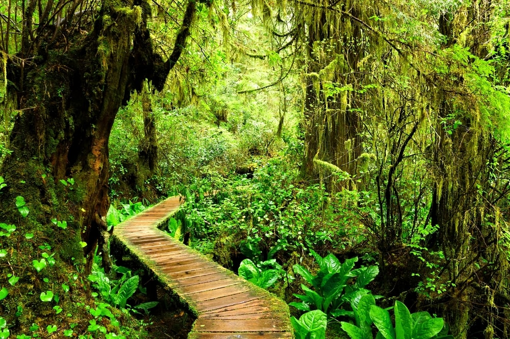
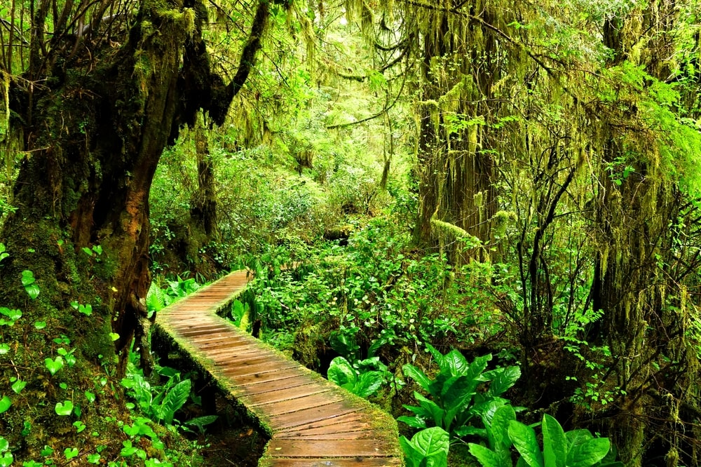

Bienvenue à Vancouver
La nature à Vancouver
Vancouver, port maritime animé de la côte ouest de la Colombie-Britannique, compte parmi les villes les plus denses et les plus diversifiées du Canada sur le plan ethnique. Lieu de tournage populaire, elle est entourée de montagnes et possède également une scène artistique, théâtrale et musicale florissante. La Vancouver Art Gallery est réputée pour ses œuvres d'artistes régionaux, tandis que le Musée d'anthropologie abrite d'importantes collections des Premières Nations.
Le parc Stanley est un joyau naturel de la ville, offrant plus de 400 hectares de sentiers, plages, et paysages à couper le souffle.
L'ile de Vancouver est un paradis pour les amateurs de nature sauvage. C'est qu'elle est dotée de l’un des écosystèmes les plus variés au monde! Forêts luxuriantes, marais, prairies, plages, montagnes, océans, fleuves et lacs se côtoient sur un territoire à peine plus grand que la Belgique! Ils offrent des habitats accueillants pour une multitude d’espèces sauvages, des ours aux baleines. Et un magnifique écrin pour des aventures de plein air variées, de la simple randonnée d'observation aux sorties plus sportives ! Tout au long de votre voyage, vous serez au plus près de la nature! Parce que la nature est vraiment partout, parfois apprivoisée par l'homme, jamais domestiquée! Du nord peu habité et sauvage, ouvrant l'accès à la forêt pluviale "Great Bear", jusqu'à la très british capitale Victoria au sud, donnant sur le dédale des îles Gulf. Des plages de sable du détroit de Géorgie à l'est, jusqu'à l'abondante vie marine et terrestre du Pacific Rim à l'ouest! Partout, les émotions sont garanties ! Suivez-nous pour un voyage qui sera un véritable retour aux sources!
Culture et vie urbaine
Vancouver est une ville où la nature est omniprésente, offrant une proximité inégalée avec les montagnes, l'océan et de nombreux parcs. Cette relation intime avec la nature est l'un des aspects les plus attrayants de la vie à Vancouver. Parmi les sites naturels incontournables, le Parc Stanley se distingue comme une véritable oasis au cœur de la ville. Le Mont Grouse, situé à quelques minutes du centre-ville, offre des activités de plein air tout au long de l'année. L'île de Granville est un autre joyau culturel de Vancouver. Les plages de Kitsilano et de Jericho sont des destinations prisées qui offrent un cadre idyllique pour profiter de la beauté naturelle de la région. Vancouver offre un cadre de vie exceptionnel qui allie dynamisme urbain et splendeur naturelle. Que ce soit pour skier dans les montagnes, randonner dans les forêts ou pratiquer des sports nautiques sur l'océan, cette proximité avec la nature fait le bonheur de tous les résidents et visiteurs.
Vancouver est régulièrement classée parmi les cinq premières villes mondiales pour sa qualité de vie. Cette distinction n'est pas due au hasard, plusieurs facteurs contribuent à faire de Vancouver un lieu de vie exceptionnel. Tout d'abord, les infrastructures de la ville sont modernes et bien entretenues. Les transports en commun, comprenant un réseau de bus étendu, le SkyTrain et des ferries, facilitent les déplacements dans et autour de la ville. Les pistes cyclables et les espaces piétonniers encouragent également des modes de transport durables et actifs. Les services offerts aux résidents sont de haute qualité. Vancouver dispose d'excellents établissements de santé, d'éducation et de loisirs. Les hôpitaux et les cliniques sont à la pointe de la technologie, et les écoles et universités, comme l'Université de la Colombie-Britanique, sont reconnues internationalement. La sécurité est un autre facteur clé. Vancouver est réputée pour être l'une des villes les plus sûres du Canada. De plus, la proximité avec la nature permet aux habitants de profiter facilement de loisirs en plein air, comme la randonnée, le ski et les sports nautiques, contribuant à un mode de vie équilibré et sain. Tous ces éléments font de Vancouver une ville où il fait bon vivre, attirant chaque année de nouveaux résidents en quête d'une qualité de vie inégalée.
L’école Cousteau - L’école française internationale de Vancouver
Fondée en 1997, l'école Cousteau compte aujourd'hui plus de 220 élèves de 30 nationalités différentes, sur un site magnifique de 2,5 hectares. Nous accueillons des élèves de 3 à 14 ans, de la maternelle à la 9e année. Nos enseignants sont certifiés en France et en C.-B., et enseignent les deux curriculums (France et C.-B.). Les élèves apprennent à devenir bilingues, éco-responsables, ouverts sur le monde et à exceller académiquement. L'Institut Fraser a accordé à l'école Cousteau une note de 9.2/10, la meilleure note de toutes les écoles francophones de Vancouver.
Elle offre un enseignement en français, enrichi par l’ouverture à l’anglais et aux cultures du monde, dans un environnement international stimulant. L’école est située à Vancouver-Ouest, dans un quartier résidentiel calme et proche de la nature, favorisant un cadre d’apprentissage équilibré.
Quelques images de Vancouver :
 

Tableau comparatif
| Aspect | Vancouver | Montréal |
|---|---|---|
| Climat | Océanique (doux, humide) | Continental (froid l’hiver) |
| Langue principale | Anglais | Français |
| Population | ~675 000 | ~1,7 million |
| Montagnes proches | Oui | Non |